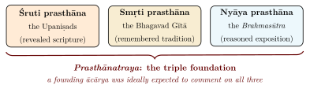
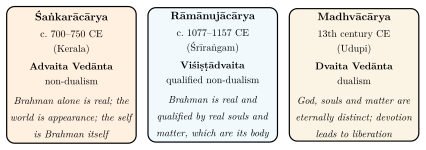
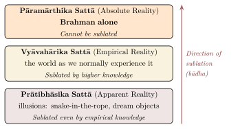
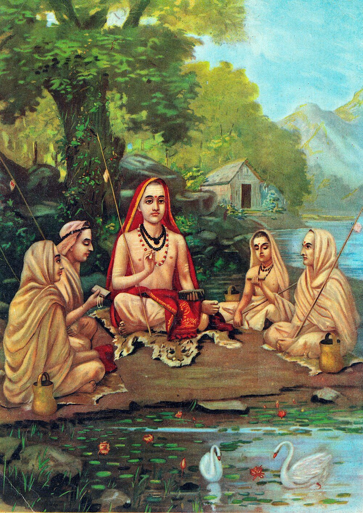

Chapter 11: The Commentarial Tradition¶
11.1 Introduction: Why Commentaries?¶
The Upaniṣads invite interpretation. Their terse, often enigmatic style, their use of symbol, metaphor and paradox, and their apparent contradictions (Section 3.5) produced a commentarial literature that has continued for more than twelve centuries.
The commentarial tradition on the Upaniṣads is anchored in the Prasthānatraya — the “Triple Foundation” of Vedāntic philosophy (Figure 11.1).

A major ācārya (philosophical teacher) who founded a sampradāya (school of thought) was ideally expected to write commentaries (bhāṣyas) on all three of these foundations, though not all did: Śaṅkara and Madhva commented on the principal Upaniṣads, whereas Rāmānuja wrote on the Brahmasūtra and the Gītā and set out his reading of the Upaniṣads in the independent Vedārthasaṅgraha. It is through these commentaries that the diverse schools of Vedānta — Advaita, Viśiṣṭādvaita, Dvaita, and others — emerged.
11.2 Before the Commentators: The Brahmasūtra and Early Vedānta¶
The commentaries examined in this chapter are not the first systematic readings of the Upaniṣads. Between the latest principal Upaniṣads and Śaṅkara lie several centuries of Vedāntic thought, known to us mainly through one surviving text, the Brahmasūtra, and through fragments and reports of teachers whose works are lost (Nakamura 1983; Potter 1981).
The Brahmasūtra (also called Vedāntasūtra or Śārīrakasūtra), ascribed by tradition to Bādarāyaṇa, consists of about 555 aphorisms (the count differs between commentators) in four chapters (adhyāyas) of four quarters each. Its date is uncertain. Its final form is usually placed somewhere in the first five centuries CE, and Hajime Nakamura argued for c. 400–450 CE, though the work incorporates older material (Nakamura 1983). The sūtras are too terse to be understood without a commentary: many consist of two or three words that point to an Upaniṣadic passage and a conclusion about it. The oldest commentary to survive complete is Śaṅkara’s.
The text has a clear programme:
-
The first chapter (samanvaya, “harmony”) argues that all the Upaniṣadic passages about the cause of the world refer, coherently, to Brahman. It opens with “Now, therefore, the enquiry into Brahman” (athāto brahmajijñāsā, 1.1.1), defines Brahman as “that from which the origin and so on of this world proceed” (janmādy asya yataḥ, 1.1.2), alluding to Taittirīya 3.1, and declares this established “because of harmony” (tat tu samanvayāt, 1.1.4). It then works through passages in which a word such as “space”, “breath”, “light” or “the self made of bliss” might seem to name something other than Brahman.
-
The second chapter (avirodha, “non-contradiction”) defends this conclusion against rival doctrines — above all the Sāṅkhya theory that unconscious matter is the cause of the world, but also the Vaiśeṣikas, Buddhists, Jains and Pāśupatas — and reconciles apparently conflicting Upaniṣadic statements about creation and the self.
-
The third chapter (sādhana, “means”) treats rebirth, the states of the self and the meditations (vidyās): which vidyās taught in different Upaniṣads are the same, and which may be combined (Section 4.3).
-
The fourth chapter (phala, “fruit”) describes the result: the journey of the knower by the path of the gods and the nature of liberation.
The work thus treats the Upaniṣads as a single body of doctrine, to be harmonised by rules of interpretation adapted from the Mīmāṃsā of the ritual texts.
Bādarāyaṇa was not alone. The sūtras name earlier teachers and their views. On the relation between the individual self and Brahman (1.4.20–22), Āśmarathya held that the self is neither wholly different from Brahman nor wholly identical with it; Auḍulomi, that it is different while embodied and becomes one with Brahman on liberation; and Kāśakṛtsna, that Brahman itself exists as the individual self. Others named include Jaimini, Bādari and Kārṣṇājini. Later sources add teachers whose works are lost. Bhartṛprapañca, whose views Śaṅkara attacks in his commentary on the Bṛhadāraṇyaka (later commentators supply the name), combined knowledge with ritual action and taught a doctrine of difference-in-identity (bhedābheda). Rāmānuja says that he follows an extensive commentary (vṛtti) by Bodhāyana, and he cites Ṭaṅka and Dramiḍa among his predecessors; Śaṅkara refers to Upavarṣa. Gauḍapāda’s Kārikā (Section 3.2.5) and the grammarian Bhartṛhari’s philosophy of the word (5th century) show that non-dualist positions were also in the field before Śaṅkara.
Two points follow for the reader of this volume. First, the classical commentators did not read the Upaniṣads directly but through the Brahmasūtra’s harmonising programme, which already treated the texts as one consistent revelation. Second, the earliest Vedānta of which we have reports was probably a form of difference-in-identity, and Śaṅkara’s strict non-dualism was one position among several, argued against predecessors (Nakamura 1983). The theistic schools that came after him could therefore claim older precedents than modern accounts dominated by Advaita often suggest.
11.3 The Three Great Ācāryas¶
Figure 11.2 introduces the three ācāryas whose readings of the Upaniṣads are examined in this chapter.

11.4 Śaṅkarācārya and Advaita Vedānta¶
11.4.1 Life and Legacy¶
Śaṅkara is the most influential of the Vedāntic commentators. The conventional dates 788–820 CE derive from late traditional sources; many scholars now place him earlier, around 700–750 CE (Nakamura 1983). According to the hagiographies (the Śaṅkaradigvijaya texts, composed many centuries after his death), he was born at Kālaṭi (Kalady) in Kerala, renounced the world as a boy, studied under Govindapāda (said to be a disciple of Gauḍapāda), and died young. His authentic works include commentaries on the ten principal Upaniṣads, the Brahmasūtra and the Bhagavad Gītā, and the independent Upadeśasāhasrī (Mayeda 1979); many other works traditionally ascribed to him, such as the Vivekacūḍāmaṇi, are of doubtful authenticity (Potter 1981).
11.4.2 Key Principles of Śaṅkara’s Upaniṣadic Interpretation¶
Brahman as the sole reality (brahma satyaṃ): Brahman, pure consciousness (later Advaita’s Sat-Cit-Ānanda), is the only ultimate reality. Everything else is a superimposition (adhyāsa) upon Brahman.
The world as appearance (jagan mithyā): The phenomenal world is neither absolutely real (sat) nor absolutely unreal (asat); it is mithyā — an appearance that has empirical reality (vyāvahārika sattā) but no ultimate reality (pāramārthika sattā).
The jīva is Brahman (jīvo brahmaiva nāparaḥ): The individual self is not a separate entity; it is Brahman itself, appearing as an individual due to the limiting adjuncts (upādhis) of body, mind, and ego.
Liberation through knowledge alone: Mokṣa is achieved not through action (karma), not through devotion alone (bhakti), but through jñāna — the direct, intuitive knowledge of one’s identity with Brahman.
Adhyāsa (Superimposition): The fundamental error is adhyāsa — the mutual superimposition of the Self and the not-Self, of the subject and the object, of Ātman and anātman.
brahma satyaṃ jagan mithyā jīvo brahmaiva nāparaḥ
Translation: “Brahman is real; the world is an appearance; the individual self is none other than Brahman.”
— A popular Advaita summary attributed to Śaṅkara: Brahmajñānāvalīmālā 20; the first half also Vivekacūḍāmaṇi 20 (numbering varies); not in his major commentaries
11.4.3 Śaṅkara’s Method: Adhyāropa-Apavāda¶
Śaṅkara’s commentarial method is grounded in the hermeneutical technique of adhyāropa-apavāda (superimposition and subsequent negation), which he cites as a maxim of “those who know the tradition” (commentary on Gītā 13.13). This technique proceeds in two stages (Table 11.1):
Adhyāropa (Superimposition): The teacher provisionally accepts the dualistic framework of common experience — the existence of the world, the reality of the individual soul, the distinction between God and soul — in order to communicate with the student at the student’s level of understanding.
Apavāda (Negation): Having used this provisional framework to convey certain truths, the teacher then systematically negates the framework itself, revealing that the dualities it posited were appearances only. Brahman alone is real.
| Distinction | Sanskrit | Application to Upaniṣadic Interpretation |
|---|---|---|
| Empirical vs. Ultimate truth | Vyāvahārika / Pāramārthika | Creation passages describe empirical reality; identity passages describe ultimate truth |
| Conditioned vs. Unconditioned Brahman | Saguṇa / Nirguṇa | Passages attributing qualities to Brahman refer to the conditioned; neti neti passages reveal the unconditioned |
| Determination of purport | Tātparya | The intended teaching of every Upaniṣad is the non-dual Brahman; other topics are subsidiary. Later Advaita determines purport by six marks (ṣaḍ-liṅga): beginning and conclusion, repetition, novelty, result, eulogy, and reasoning |
11.4.4 Three Levels of Reality¶
Śaṅkara distinguishes the empirical and the ultimate standpoints; his successors systematised this into three levels of reality (Figure 11.3).

11.5 Rāmānujācārya and Viśiṣṭādvaita Vedānta¶
11.5.1 Life and Legacy¶
Rāmānuja (traditionally 1017–1137 CE, a lifespan of 120 years; many scholars prefer c. 1077–1157) was born in Śrīperumbudūr, near modern Chennai, and became the most influential teacher of the Śrī Vaiṣṇava tradition, which joined Sanskrit Vedānta to the Tamil devotional poetry of the Āḻvārs (Carman 1974). His magnum opus, the Śrībhāṣya (commentary on the Brahma Sūtras), established Viśiṣṭādvaita (“qualified non-dualism”) as a major philosophical school.
11.5.2 Key Principles of Rāmānuja’s Interpretation¶
Brahman is Nārāyaṇa: The Supreme Brahman is not impersonal but is Lord Nārāyaṇa (Viṣṇu), possessed of infinite auspicious qualities (ananta-kalyāṇa-guṇas).
The world is real: Unlike Śaṅkara’s mithyā, Rāmānuja affirms that the world is absolutely real — it is the body (śarīra) of Brahman.
Śarīra-Śarīrī Bhāva: The relationship between Brahman and the world/souls is that of soul (śarīrī) to body (śarīra). Brahman is the inner controller (antaryāmin) of all souls and of the material world.
Three real categories: God (Īśvara), individual souls (cit), and matter (acit) are all real, but the latter two are entirely dependent upon and controlled by God.
Liberation through devotion: In the Śrībhāṣya the means to liberation is bhakti, understood as meditation (upāsana) in the form of loving and unbroken remembrance of the Lord, made possible by his grace; liberation consists in eternal, blissful service to Nārāyaṇa in Vaikuṇṭha. Surrender (prapatti) as an independent and sufficient means is emphasised by the later Śrīvaiṣṇava teachers (Section 11.12.4); it is taught most explicitly in the three Gadyas ascribed to Rāmānuja, whose authorship has been debated (Carman 1974).
11.5.3 Rāmānuja’s Reading of Tat Tvam Asi¶
Rāmānuja reads Tat tvam asi not as asserting absolute identity between the individual self and Brahman, but as asserting that the individual self has Brahman as its inner Self. The asi (“art”) denotes not bare identity but the relationship of the ensouled body to its indwelling controller. The individual soul is a real “mode” (prakāra) and part (aṃśa) of Brahman, inseparable from it (apṛthaksiddhi) as an attribute is from its substance, yet never identical with it; the world of souls and matter is Brahman’s body and is wholly real (Table 11.2).
11.6 Madhvācārya and Dvaita Vedānta¶
11.6.1 Life and Legacy¶
Madhvācārya (traditionally 1238–1317 CE; some scholars prefer 1199–1278), also known as Ānanda-tīrtha or Pūrṇa-prajña, hailed from the region of Udupi in coastal Karnataka. He established Dvaita (“dualism”) as the third major school of Vedānta, in sharp opposition to Śaṅkara’s Advaita (Sharma 1962).
11.6.2 Key Principles of Madhva’s Interpretation¶
Five eternal distinctions (pañca-bheda):
God and individual soul (jīva-Īśvara bheda)
God and matter (jaḍa-Īśvara bheda)
Individual souls and matter (jīva-jaḍa bheda)
Between individual souls (jīva-jīva bheda)
Between material things (jaḍa-jaḍa bheda)
Viṣṇu is the Supreme Being: Lord Viṣṇu is the independent (svatantra) Supreme Being; all else is dependent (paratantra).
The world is real: The material world is fully real, not an illusion.
Liberation through grace and devotion: Liberation is granted by the grace of Viṣṇu to those who are devoted to Him. It consists in the eternal experience of bliss in His presence.
Hierarchy of souls: Madhva posits an inherent gradation (tāratamya) among souls, with different souls having different innate capacities; uniquely in Vedānta, he holds that some souls are eternally bound in saṃsāra and some destined for eternal darkness.
Madhva reads the identity statements of the Upaniṣads in the light of these distinctions. “Tat tvam asi” is read either by dividing the preceding words so as to give “atat tvam asi” (“Thou art not That”), or with tat in the sense of “His” (“Thou art His”). Other traditions contest these readings, but they show how far a consistent doctrine of difference could take the interpretation of the same texts.
11.7 Comparative Analysis¶
Table 11.2 compares the three schools on key issues.
| Issue | Advaita (Śaṅkara) | Viśiṣṭādvaita (Rāmānuja) | Dvaita (Madhva) |
|---|---|---|---|
| Nature of Brahman | Nirguṇa (without attributes) | Saguṇa (with infinite auspicious attributes) | Saguṇa (supremely independent) |
| Brahman-World | World is mithyā (appearance) | World is Brahman’s body | World is real and distinct from God |
| Brahman-Jīva | Absolute identity | Part-Whole (body-soul) | Eternal difference |
| Cause of bondage | Avidyā (ignorance) | Turning away from God | Ignorance of God’s supremacy |
| Path to Mokṣa | Jñāna (knowledge) | Bhakti as meditation, with grace (prapatti stressed by the later school) | Bhakti & God’s grace |
| Nature of Mokṣa | Realisation of identity with Brahman | Eternal service to Nārāyaṇa | Eternal blissful proximity to Viṣṇu |
| Tat tvam asi | “Thou art That” (identity) | “Thou hast That as thy Self” | “Thou art not That” / “Thou art His” |
11.8 Other Important Commentators¶
Beyond the three great Ācāryas, several other commentators have made significant contributions (Figure 11.4):
-
Gauḍapāda (pre-Śaṅkara): Author of the Māṇḍūkya Kārikā; teacher of Śaṅkara’s teacher Govindapāda. Proponent of ajāti-vāda.
-
Sureśvarācārya: Direct disciple of Śaṅkara; wrote the Vārttikas (sub-commentaries) on the Taittirīya and Bṛhadāraṇyaka Bhāṣyas.
-
Padmapādācārya: Another direct disciple; wrote the Pañcapādikā on Śaṅkara’s Brahma Sūtra Bhāṣya.
-
Nimbārkācārya: Proponent of Dvaitādvaita (dualistic non-dualism); wrote on the Brahma Sūtras.
-
Vallabhācārya: Proponent of Śuddhādvaita (pure non-dualism); emphasised Kṛṣṇa-bhakti.
-
Bhāskara (c. 8th–9th century): Proponent of bhedābheda (difference-in-identity) and an early critic of Śaṅkara’s doctrine of māyā.
-
Raṅgarāmānuja (16th century): Wrote Viśiṣṭādvaita commentaries on the principal Upaniṣads, filling the gap left by Rāmānuja.
-
Upaniṣadbrahmayogin (18th century): Wrote Advaita commentaries on all 108 Upaniṣads of the Muktikā canon, including the Yoga and Sannyāsa Upaniṣads.
-
Vivaraṇa and Bhāmatī sub-schools: Within Advaita itself, two major sub-schools developed, offering differing interpretations of key doctrinal points.


The commentarial tradition shows that the Upaniṣads do not carry a single message. They are varied enough to support several internally consistent interpretations, and the argument between the schools has continued for more than a thousand years.
11.9 The Vivaraṇa and Bhāmatī Sub-Schools of Advaita¶
Within Śaṅkara’s own Advaita tradition, two major sub-schools emerged, differing primarily on the nature and locus of avidyā (ignorance) (Table 11.3).
| Issue | Vivaraṇa (Prakāśātman) | Bhāmatī (Vācaspati Miśra) |
|---|---|---|
| Locus of avidyā | Brahman is the locus of ignorance (avidyā) | The individual soul (jīva) is the locus of ignorance |
| Object of avidyā | Brahman itself is concealed by avidyā | Brahman is the object; the soul misperceives it |
| Jīva’s relation to Brahman | Reflection theory (pratibimba-vāda): the jīva is Brahman reflected in ignorance | Delimitation theory (avaccheda-vāda): the jīva is Brahman delimited by ignorance, like space in a jar |
11.10 Modern Western Engagement with Upaniṣadic Commentary¶
The Western engagement with the Upaniṣadic commentarial tradition has been transformative for comparative philosophy. Paul Deussen’s Die Philosophie der Upaniṣad’s (1899; English translation 1906) (Deussen 1906), Rudolf Otto’s comparison of Śaṅkara and Meister Eckhart in Mysticism East and West (German 1926, English 1932) (Otto 1932), and more recently the translations of Patrick Olivelle and Valerie Roebuck (Olivelle 1998; Roebuck 2003) have made the Upaniṣads and their interpretive traditions accessible to readers without Sanskrit.
Scholarly Note: Max Müller and the Sacred Books of the East
F. Max Müller’s translation of twelve Upaniṣads in volumes 1 (1879) and 15 (1884) of the Sacred Books of the East was a watershed in the Western reception of the Upaniṣads (Müller 1879). Translations of this generation reached many Western writers. T. S. Eliot, who had studied Sanskrit at Harvard, built the closing section of The Waste Land (1922) on the thunder’s “Da” of Bṛhadāraṇyaka 5.2 and ended it with śāntiḥ; Aldous Huxley drew on Vedānta in The Perennial Philosophy (1945); and Erwin Schrödinger, in Mind and Matter (1958), wrote that “consciousness is a singular of which the plural is unknown”, an idea he explicitly associated with the Upaniṣads. Which translations Schrödinger read is not documented, and his views were personal philosophical convictions, not conclusions of physics.
11.11 Other Schools of Vedānta: Nimbārka, Vallabha, and Caitanya¶
11.11.1 The Later Vedāntic Ācāryas¶
Beyond the three great ācāryas — Śaṅkara, Rāmānuja, and Madhva — several other teachers established distinctive schools of Vedānta, each with its own reading of the Upaniṣads and its own devotional emphasis.
Nimbārkācārya (dated variously between the 7th and the 13th century; most scholars favour the 12th–13th) established the school of Dvaitādvaita (dualistic non-dualism), which holds that Brahman is simultaneously identical with and different from the world and the individual souls — just as the sun is both identical with and different from its rays. Vallabhācārya (1479–1531) established Śuddhādvaita (pure non-dualism), which rejects Śaṅkara’s concept of māyā and holds that the world is entirely real, being a direct manifestation of Brahman (specifically, Kṛṣṇa). Caitanya (1486–1534) inspired the school of Acintya-bhedābheda (inconceivable simultaneous oneness and difference), systematised by his follower Jīva Gosvāmī, which holds that the relationship between God, souls, and matter is characterised by an inconceivable combination of identity and difference (Table 11.4).
| School | Founder | Date (approx.) | Central Thesis |
|---|---|---|---|
| Advaita | Śaṅkara | 8th century | Brahman alone is real; the world is appearance; the jīva is Brahman |
| Viśiṣṭādvaita | Rāmānuja | 11th–12th century | Brahman is qualified by real souls and matter, which are its body |
| Dvaita | Madhva | 13th century | God, souls, and matter are eternally distinct; five real differences |
| Dvaitādvaita | Nimbārka | 12th–13th century | Brahman is simultaneously identical with and different from souls and matter |
| Śuddhādvaita | Vallabha | 15th–16th century | The world is a real transformation of Brahman (Kṛṣṇa); no māyā |
| Acintya-bhedābheda | Caitanya tradition | 16th century | Inconceivable simultaneous oneness and difference characterises all relations |
11.11.2 The Hermeneutical Methods of the Ācāryas¶
Each school of Vedānta developed its own methods for interpreting the Upaniṣads, drawing on the principles of textual interpretation (mīmāṃsā nyāyas) worked out for the ritual texts. All accept the Brahmasūtra’s principle of samanvaya (harmonisation): the Upaniṣadic texts must be interpreted as a coherent whole, and apparent contradictions resolved by systematic rules (Section 11.2).
Śaṅkara employs the principle that passages teaching non-duality represent the tātparya (intended meaning) of the Upaniṣads, while passages suggesting duality are contextual, preparatory, or figurative. Rāmānuja employs sāmānādhikaraṇya (co-reference): in “Tat tvam asi” two words with different connotations refer to one and the same reality, Brahman, qualified in one case as the cause of the world and in the other as the inner Self of the individual soul, which is its body. Madhva gives primacy to the many passages that state difference, reading identity-statements as expressions of similarity, dependence or the Lord’s indwelling; his concept of viṣeṣa (“distinguishing particularity”) explains how God and his attributes, though not different in substance, can still be spoken of as distinct.
11.12 The Upaniṣads in Tamil: Ubhaya-Vedānta¶
The commentaries discussed so far were written in Sanskrit for readers of Sanskrit. In the Tamil country two theistic traditions, the Śrīvaiṣṇava and the Śaiva Siddhānta, also possessed a scripture in Tamil, and each had to say how that scripture stood to the Upaniṣads. Their answers are easily missed when Vedānta is told only through its Sanskrit texts. The Āḻvārs and Nāyaṉmārs as poets, their temples, and the doctrines of the Tamil Śaiva Siddhānta are treated in Volume 6 (Tantra–Āgama) and Volume 8 (Kāvya Kalpalatā); this section and the next ask only how these traditions read the Upaniṣads and claimed their authority (Table 11.5).
| Figure or work | Date (approx.) | Significance for the Upaniṣads |
|---|---|---|
| Tēvāram of Campantar, Appar and Cuntarar | 7th–8th c. | Tamil Śaiva hymns that praise Śiva as the Lord of the four Vedas |
| Nammāḻvār, Tiruvāymoḻi | probably 9th c. | The “Tamil Veda”, called in Sanskrit the Drāmiḍopaniṣad |
| Nāthamuni | c. 10th c. | Compiles the Āḻvārs’ hymns (tradition); temple recitation |
| Yāmuna (Āḷavantār) | c. 10th–11th c. | First Śrīvaiṣṇava works of Sanskrit philosophy |
| Rāmānuja | c. 1077–1157 | Sanskrit exegesis of the Upaniṣads; no citation of the Tamil hymns |
| Piḷḷāṉ, Ārāyirappaṭi | 12th c. | First commentary on the Tiruvāymoḻi, in Maṇipravāḷa |
| Meykaṇṭār, Civañāṉapōtam | 13th c. | Founding treatise of Tamil Śaiva Siddhānta |
| The Īṭu (Nampiḷḷai’s lectures) | 13th c. | The longest classical commentary on the Tiruvāymoḻi |
| Vedānta Deśika | 1268–1369 (trad.) | Sanskrit summaries of the “Tamil Upaniṣad”; teacher of the Vaṭakalai |
| Maṇavāḷa Māmuṉi | 1370–1443 (trad.) | Teacher of the Teṉkalai; Tamil summary of the Tiruvāymoḻi |
| Civañāṉa Muṉivar | 18th c. | Tamil “great commentary” on Meykaṇṭār’s treatise |
11.12.1 A Veda in Tamil¶
Śrīvaiṣṇavas describe their theology as ubhaya-vedānta, “the Vedānta of both”: of the Sanskrit Upaniṣads and of the Tamil hymns of the twelve Āḻvārs, gathered as the Nālāyira Divya Prabandham (“Four Thousand Sacred Compositions”). Tradition credits the collection to Nāthamuni (c. tenth century), who is said to have recovered the hymns of Nammāḻvār after they had been lost and to have set them to music for recitation in the temple. The story of the recovery belongs to hagiography, but the compilation of the canon and the institution of its temple recitation are generally placed in his time (Narayanan 1994).
At the centre of the canon stands Nammāḻvār (probably ninth century), a poet of a non-Brahmin cultivating community from Kurukūr on the Tāmiraparaṇi river. Tradition matches his four works to the four Vedas: the Tiruviruttam to the Ṛgveda, the Tiruvāciriyam to the Yajurveda, the Periya Tiruvantāti to the Atharvaveda, and the longest, the Tiruvāymoḻi of 1,102 verses, to the Sāmaveda, because like the Sāman it is sung. The Tiruvāymoḻi is called the “Tamil Veda” (Tamiḻ maṟai) and, in Sanskrit, the Drāmiḍopaniṣad, “the Tamil Upaniṣad”. The claim is meant in earnest. For the tradition the Tamil hymns reveal the same Lord as the Upaniṣads, and the commentators give them the reverence, the rules of recitation and the methods of interpretation that the Sanskrit Veda receives (Carman and Narayanan 1989).
Two features made the claim unusual. The poet was not a Brahmin. And the Tamil Veda, unlike the Sanskrit, could be learned and recited by Śrīvaiṣṇavas of every caste and by women. The tradition is proud of both facts. It did not, however, abolish caste: temple ritual and Vedic recitation remained in Brahmin hands, the recitation of the Prabandham was itself organised by community and office, and the commentators debated how far birth mattered among devotees (Narayanan 1994). The Tamil Veda widened access to revelation without dissolving the social order that restricted Sanskrit learning (Section 1.15).
Nāthamuni’s grandson Yāmuna, called Āḷavantār (c. tenth–eleventh century), gave the tradition its first works of Sanskrit philosophy. His Siddhitraya argues for the reality of the self and of God against Advaita, and his Āgamaprāmāṇya defends the Pāñcarātra scriptures as authoritative alongside the Veda. The Sanskrit and Tamil sides of the tradition were thus already joined before Rāmānuja.
11.12.2 Rāmānuja’s Upaniṣads¶
Rāmānuja himself wrote only in Sanskrit (Section 11.5). His Śrībhāṣya, his Vedārthasaṅgraha and his Gītā commentary never quote the Āḻvārs. Scholars have long remarked on this silence (Carman 1974). The likeliest explanation is that he was arguing in the wider world of Sanskrit learning, where only the Sanskrit Veda counted as evidence. The hagiographies, for their part, show him expounding the Tiruvāymoḻi to his disciples and commissioning the first commentary on it.
What his Sanskrit works do show is an Upaniṣadic canon with a different centre from Śaṅkara’s. Advaita builds on the identity statements (Chapter 5). Rāmānuja builds on the passages that describe Brahman as the inner controller of all things. Chief among them is the Antaryāmi Brāhmaṇa of the Bṛhadāraṇyaka (3.7). There Yājñavalkya tells Uddālaka Āruṇi that the one who dwells in earth, water, fire and every other thing, whom they do not know, whose body they are and who controls them from within, is “your self, the inner controller, the immortal”. Rāmānuja often cites this passage in the Mādhyandina recension. That version includes the self itself among the things whose inner controller Brahman is (yasyātmā śarīram, “whose body is the self”), where the Kāṇva text that Śaṅkara used has “consciousness” (vijñāna) at that point. Alongside the Bṛhadāraṇyaka he relies on texts that Śaṅkara did not comment on. These are the Subāla Upaniṣad, which names the inner self of all beings as “the one divine God, Nārāyaṇa”, and the Mahānārāyaṇa (Chapter 9).
On this basis the Vedārthasaṅgraha sorts the Upaniṣadic texts into three groups:
-
texts that teach difference between Brahman, souls and matter (bheda-śruti);
-
texts that teach non-difference (abheda-śruti);
-
“connecting” texts (ghaṭaka-śruti), above all the inner-controller passages, which show how the first two kinds can both be true. A body is distinct from its soul, yet it exists only as the soul’s mode.
The method reverses Advaita’s. For Śaṅkara the texts of difference are provisional (Section 11.4.3). For Rāmānuja no group of texts is set aside, because the relation of body and soul reconciles them all.
11.12.3 Piḷḷāṉ and the Maṇipravāḷa Commentaries¶
The first commentary on the Tiruvāymoḻi was written in the twelfth century by Rāmānuja’s cousin and disciple Tirukkurukaippirāṉ Piḷḷāṉ, by tradition at Rāmānuja’s request. It is known as the Ārāyirappaṭi, “the Six Thousand”, after its length in paṭi, units of thirty-two syllables. Four more classical commentaries followed: the Nine Thousand of Nañjīyar, the Twenty-four Thousand of Periyavāccāṉ Piḷḷai, the Twelve Thousand of Vādikesari Aḻakiya Maṇavāḷa Jīyar, and the Thirty-six Thousand, called the Īṭu, in which Vaṭakku Tiruvīti Piḷḷai recorded the lectures of his teacher Nampiḷḷai (Clooney 1996). All are written in Maṇipravāḷa (“pearls and coral”), a learned prose that mixes Tamil and Sanskrit freely. In it the Tamil verses are explained in Sanskrit categories and supported by quotations from the Upaniṣads, the Gītā and the Purāṇas.
Carman and Narayanan’s study of the Six Thousand shows how this worked (Carman and Narayanan 1989). Piḷḷāṉ reads the poet’s ecstasies and laments through the categories of Viśiṣṭādvaita: the Lord’s own nature (svarūpa) and his auspicious qualities; the soul as his body and as wholly his (śeṣa); and devotion and surrender as the means. The opening decad of the poem praises the Lord who pervades all things, hidden in them as life is in a body. In the commentary it becomes a Tamil statement of the body–soul doctrine of the Antaryāmi Brāhmaṇa.
The hardest test came with verses that sound like statements of identity. In one decad (5.6) a mother reports that her daughter, possessed by love of the Lord, speaks as though she herself had made the world and were the Lord. The commentators do not read such verses as Advaitic identity. They give two explanations. The first is that the beloved, in separation, imitates the Lord, like the cowherd women of the Purāṇas who acted out Kṛṣṇa’s deeds. The second is that whatever is the Lord’s body may be called by the Lord’s name. This is the principle by which Vedānta explains Vāmadeva’s declaration “I was Manu, I was the sun” (Bṛhadāraṇyaka 1.4.10; Brahmasūtra 1.1.30). Through such readings the Tamil hymns and the Sanskrit Upaniṣads came to interpret one another. Francis Clooney has used these commentaries as a model of how a tradition reads two scriptures together (Clooney 1996).
11.12.4 Vedānta Deśika and the Two Schools¶
Vedānta Deśika (Veṅkaṭanātha; by traditional reckoning 1268–1369) was the most prolific of the Śrīvaiṣṇava ācāryas after Rāmānuja. He wrote in Sanskrit, Tamil, Maṇipravāḷa and Prakrit, and was poet and philosopher alike (Hopkins 2002). Two of his Sanskrit works sum up the Tiruvāymoḻi decad by decad: the Drāmiḍopaniṣat-tātparya-ratnāvalī (“Jewel-string of the Purport of the Tamil Upaniṣad”) and the shorter Drāmiḍopaniṣat-sāra. The Ratnāvalī names, for each decad, the qualities of the Lord that it celebrates. Their titles declare that the Tamil hymn is an Upaniṣad, and by setting out its purport (tātparya) in Sanskrit verse Deśika carried the claim of the Tamil Veda into the Sanskrit world. His other works include the Tattvamuktākalāpa, the polemical Śatadūṣaṇī against Advaita, and the Maṇipravāḷa Rahasyatrayasāra on the theology of surrender (prapatti). A short commentary on the Īśā Upaniṣad is also ascribed to him. For prapatti the tradition finds Upaniṣadic warrant in the Śvetāśvatara’s “desiring release, I go for refuge” (mumukṣur vai śaraṇam ahaṃ prapadye, 6.18) and in the Kaṭha’s teaching that the Self is won by the one whom it chooses (1.2.23).
After Deśika the community divided into two schools. The Vaṭakalai (“northern”) looks to Deśika. The Teṉkalai (“southern”) looks to Piḷḷai Lokācārya (traditionally 1205–1311) and Maṇavāḷa Māmuṉi (traditionally 1370–1443). Their best-known difference is summed up in two images. For the Vaṭakalai the soul is like the young monkey, which clings to its mother (markaṭa-nyāya); for the Teṉkalai it is like the kitten, which is carried by the scruff of its neck (mārjāra-nyāya). The question is whether surrender is an act the soul must perform or simply the acceptance of a grace that does everything. It is often said that the Teṉkalai gives more weight to the Tamil Prabandham and the Vaṭakalai to the Sanskrit, but both remain ubhaya-vedāntins. Māmuṉi’s Tamil Tiruvāymoḻi Nūṟṟantāti, one verse for each of the hundred decads, is the Tamil counterpart of Deśika’s Sanskrit summary.
The Śrīvaiṣṇava case matters for the history of the Upaniṣads in three ways. It shows the category “Upaniṣad” being extended to a text in another language, a counterpart to the composition of new sectarian Upaniṣads in Sanskrit (Chapter 9). It shows the Upaniṣads being read inside a liturgical life of temple recitation, not only in the study. And it shows how a theistic Vedānta could treat devotional poetry as evidence for the meaning of the Upaniṣads.
11.13 Śaiva Siddhānta and the Upaniṣads¶
The Tamil Śaivas faced the same question and answered it differently. Their canon, the twelve books of the Tirumuṟai, opens with the Tēvāram hymns of Campantar, Appar and Cuntarar (seventh–eighth century). These poets repeatedly praise Śiva as the Lord of the four Vedas and their six auxiliary sciences, and present themselves as champions of Vedic religion against the Jains and Buddhists. The primary scriptures of the Siddhānta’s theology, however, are the Śaiva Āgamas (Volume 6, Tantra–Āgama). The relation between Veda and Āgama is stated in a well-known verse of Tirumūlar’s Tirumantiram, the tenth book of the canon. Veda and Āgama, it says, are both the true word of the Lord: the Veda is the general teaching and the Āgama the special one, and to the wise there is no difference between them. The Upaniṣads are thus accepted as revelation but read in the light of the Āgamas. This is the reverse of the Advaitin’s procedure, which measures the Āgamas by the Upaniṣads.
Meykaṇṭār’s Civañāṉapōtam (thirteenth century) and the works of his successors organise the Siddhānta around three realities: the Lord (pati), the bound soul (paśu) and the bonds (pāśa) (Dhavamony 1971). The Siddhāntins found an Upaniṣadic anchor for this scheme in the Śvetāśvatara. That Upaniṣad calls God “the lord of lords” (patiṃ patīnām, 6.7), names him Rudra, Hara and Śiva, and repeats the refrain “knowing God, one is freed from all fetters” (jñātvā devaṃ mucyate sarvapāśaiḥ; for example 1.8 and 2.15). As Section 4.6.6 noted, the Śaiva theologians read it as their own Upaniṣad.
The Siddhānta also took over the Upaniṣadic word advaita but gave it its own sense. “Not two” denies separation, not distinctness. In the school’s formula, Śiva is one with souls, other than them and together with them (oṉṟāy, vēṟāy, uṭaṉāy), as a vowel pervades the consonants it sounds with. In liberation the soul does not become Śiva. Freed from its bonds, it rests in Śiva’s bliss, inseparable from him and still a soul (Dhavamony 1971). Upaniṣadic statements of identity are read in this sense, much as Rāmānuja read them through the relation of body and soul.
In the eighteenth century Civañāṉa Muṉivar of the Tiruvāvaṭutuṟai monastery wrote a large Tamil commentary on Meykaṇṭār’s treatise. Its title, Drāviḍa Mahābhāṣya (“the Great Tamil Commentary”), deliberately matches the Sanskrit commentaries on the Brahmasūtra, and it presents the Siddhānta, in the manner of a Vedāntic bhāṣya, as the correct reading of scripture as a whole. The poet Tāyumāṉavar of the same century sang of a “harmony of Vedānta and Siddhānta” (vētānta-cittānta camaracam), an ideal that Śaiva tradition traces back to Tirumūlar. In Sanskrit, Śrīkaṇṭha’s Śaiva commentary on the Brahmasūtra, defended by Appayya Dīkṣita in the sixteenth century, offered a Śaiva Vedānta close to Rāmānuja’s (see Volume 3, Darśana Darpaṇa).
11.14 Regional-Language Renderings¶
Before the age of print, few people met Upaniṣadic teaching through translations of the Upaniṣads themselves. Most met it through works in their own language that taught Vedānta in new words, usually in verse and usually from the standpoint of a particular school. A few examples show the range.
-
Marathi. Jñāneśvar (thirteenth century), whose Jñāneśvarī on the Gītā is discussed in Volume 8, also wrote the Amṛtānubhava. This independent Marathi poem on non-dual experience draws, in the view of many scholars, on Śaiva thought as well as on Advaita.
-
Hindi. The Sant poets such as Kabīr spoke of a formless Lord within but rejected the authority of the Veda and of Brahmin learning, so they are a parallel to Vedānta rather than a reception of it (Volume 8). Within the Sant tradition, the Dādūpanthī poet Sundardās, who had studied Sanskrit at Banaras, set out Vedāntic doctrine systematically in Hindi verse.
-
Tamil Advaita. The Kaivalya Navanītam (“Cream of Liberation”), ascribed to Tāṇṭavarāya Cuvāmikaḷ and probably of the seventeenth century, is a Tamil verse manual of Advaita in the form of a dialogue between teacher and pupil. It became a standard text in Tamil monasteries and was among the books recommended by Ramaṇa Maharṣi (1879–1950), whose own Tamil Uḷḷatu Nāṟpatu (“Forty Verses on Reality”) is an independent composition.
-
Malayalam. Nārāyaṇa Guru (1856–1928), whose challenge to caste exclusion is discussed in Volume 24 (Samanvaya), wrote the Ātmopadeśaśatakam (“Hundred Verses of Self-Instruction”) in Malayalam and a Malayalam verse rendering of the Īśā Upaniṣad. Through him the Advaitic reading of the Upaniṣads became an argument against the caste restrictions that classical Vedānta had upheld.
-
Bengali. Rām Mohan Roy’s Bengali and English versions of several Upaniṣads (1816–19), among the earliest printed translations of the Upaniṣads into a modern Indian language and meant for a general readership, are discussed in Section 12.2 and, more fully, in Volume 24.
In the twentieth century, publishers such as the Gita Press of Gorakhpur (founded 1923) and the presses of the Ramakrishna Order issued inexpensive editions of the principal Upaniṣads. These carried Śaṅkara’s commentary and translations into Hindi, Bengali, Tamil and other languages, and they made the texts widely available for the first time. Most of these readers met the Upaniṣads through a school, most often Advaita, sometimes Viśiṣṭādvaita or Dvaita. Here too, as throughout this volume, the reader should distinguish the texts from the readings that carried them.
Oṃ Śāntiḥ Śāntiḥ Śāntiḥ